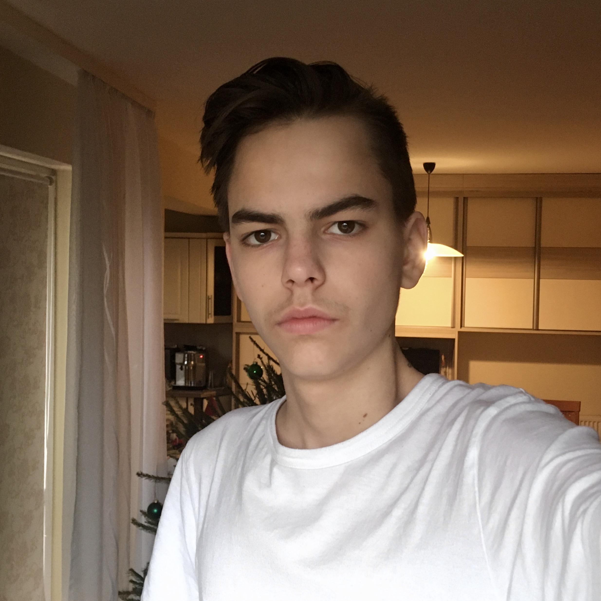
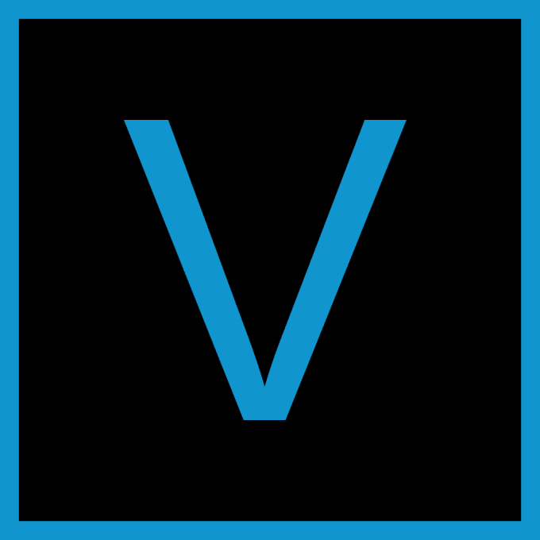
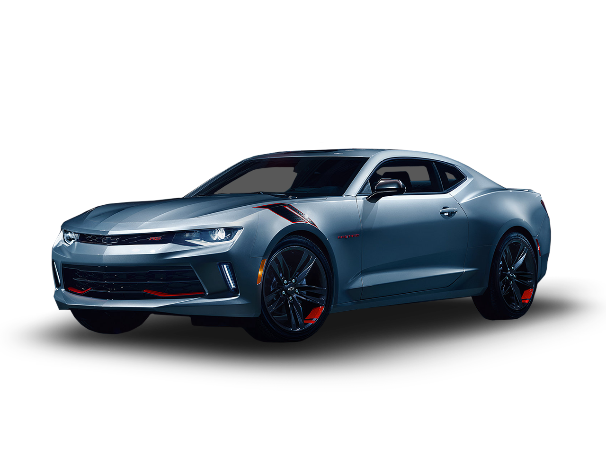

Dankó Dániel - ÖNÉLETRAJZ
| Név: |
Dankó Dániel |
 |
| Születési dátum: |
2005.05.21. |
| E-mail cím: |
danko7119@gmail.com |
| Facebook: |
Dankó Dániel |
|
|
ISKOLÁK
HOBBIK
 Python programozás
Python programozás
3 éve programozom hobbi szinten. Egy éve kezdtem el a Python-t, és mára ez lett a kedvenc programnyelvem.
Amit szertek benne, hogy más programnyelvekhez képest nem nehéz, és sok modul található hozzá az interneten.

Videóvágás
Körölbelül fél éve elindítottam egy saját csatornát, és nagyon megkedveltem ezt a hobbit is. A nyáron ki is próbáltam,
egy videóvágó szoftvert a Vegas Pro-t, és azóta ezt használom, kisebb-nagyobb projektekhez egyaránt.

Autók
Már kiskorom óta érdeklődöm az autók, autótuningolás, autóversenyek iránt. Ugyan nem tuninigoltam, és nem versenyeztem
még autóval, de rendszeresen fogyasztok ilyen típusú tartalmakat, és tanulok autókról.
CÉLJAIM
Érettségi után mindenképpen szeretnék továbbtanulni, emiatt 5 év múlva egyetemen/főiskolán hallgatóként képzelem el magam,
10 év múlva programozóként szeretnék elhelyezkedni, és ebből is szeretnék megélni.